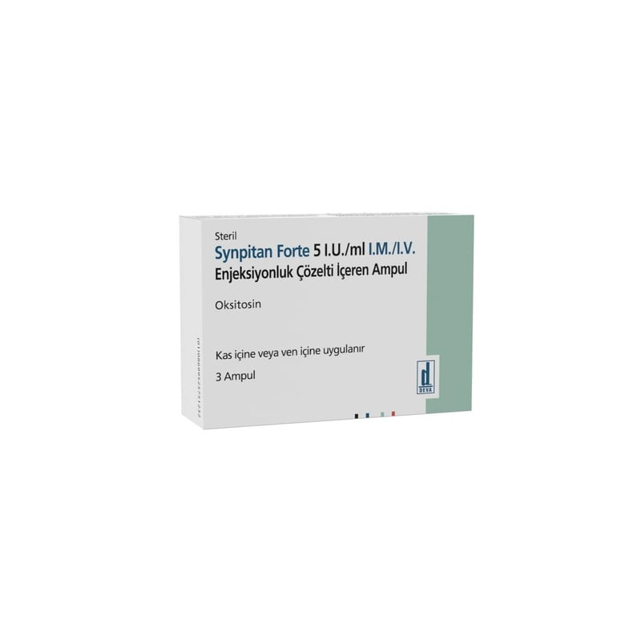

Synpitan Forte 5 I.U./ml I.M./I.V. Enjeksiyonluk Çözelti İçerenampul, 50 Adet

Ne için kullanılır
KT · Bölüm 1SYNPİTAN FORTE, ampul içerisinde renksiz, karakteristik kokulu berrak çözelti şeklinde sunulan bir üründür. 1 mL’lik 3, 6 ve 50 ampul içeren ambalajlarda sunulur.
SYNPİTAN FORTE, oksitosinden üretilmiş bir form (doğal bir hormon) içermektedir. Oksitosin, rahimdeki düz kasların kasılmasını sağlayan bir hormondur.
SYNPİTAN FORTE aşağıdaki durumlarda kullanılmaktadır: • Doğum sırasında kasılmaları başlatmak veya yardımcı olmak için • Planlanmış düşük yönetimine yardımcı olmak için • Doğumdan sonra kanamayı önlemek veya kontrol etmek için • Sezaryen sırasında